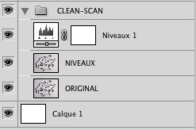
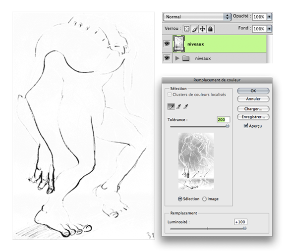

"Photoshop, un outil parmi d'autres, et non une fin en soi."
Après le dessin traditionnel, Zozor s'en va à la quête du dessin numérique sur Photoshop. Afin de répondre à sa curiosité insatiable, il a fallu rappeler à la rescousse les 3 profs qui l'avaient aidé à apprendre le dessin. Voici donc le trio légendaire des primary colors ! :soleil:
Ils interviendront régulièrement au fil des leçons afin de les éclairer de leur bêti..sagesse légendaire. Comme il y a un Zozor en chacun de nous, autant partager ces leçons avec vous, et vous aussi vous deviendrez des maîtres de la tablette graphique !
Ce big-tuto se focalise sur le coté graphique de Photoshop. Dessiner et peindre en se servant des avantages de Photoshop sans tomber dans les pièges habituels du dégradé uniforme et tout plein de couleurs. Suivre à la lettre des tutos est bien joli, mais pour faire des images qui ne ressemblent pas aux autres, il vaut mieux comprendre ce que l'on fait et apprendre à se servir au mieux des outils fournis par Photoshop.
Des outils et des possibilités qui facilitent votre travail et vous permettent d'exprimer au mieux votre talent, pour ainsi le partager aux autres.
Améliorer la qualité d'une image scannée est un problème auquel on peut souvent être confronté. Tout le monde ne possédant pas une tablette graphique ou n'étant pas forcément à l'aise avec pour dessiner. Le souci d'un scan est qu'on obtient fréquemment une image sur fond gris alors que le dessin d'origine était évidemment sur fond blanc. Bien gênant pour mettre en couleur son dessin ou encore pour l'ajouter sur le fond blanc d'un site web, la délimitation grisée de l'image devenant nettement visible. Nettoyer un scan (ou même la photo d'un dessin) est très pratique également si l'on souhaite récupérer le contour seulement du dessin ou revenir sur le tracé, pour le grossir ou le diminuer comme on le verra plus loin.
En général, je vois pas mal de débutants avoir des dessins grisés, et même en production ça m'arrive d'avoir à cleaner des scans, car on ne travaille pas toujours avec les mêmes imprimantes d'un job à l'autre ou n'avons pas le temps de se familiariser avec les logiciels de numérisation pour les régler correctement. Surtout que leurs interfaces abracadabrantes et non intuitives ne nous aident pas tellement à faire de bons scans. :-° Du coup, il est plus sûr et efficace d'aller sur Photoshop et d'y cleaner rapidement son image. Photoshop est là pour nous sauver la mise ! Vous allez voir, la méthode est très simple. Commencez tout d'abord par récupérer l'image qui va nous servir d'exemple. Vous pourrez ainsi pratiquer en même temps.
Pour une première fois, choisissons un exemple simple :
Tout d'abord pensez à sauvegarder l'image ailleurs. On ne sait jamais, une mauvaise manip' peut vite arriver, alors gardez toujours une copie de votre image quelque part.
Tiens d'ailleurs, pour bien suivre ce chapitre, on va même dupliquer à chaque étape le calque sur lequel on travaille. On gardera ainsi toutes les étapes précédentes et l'on pourra facilement les comparer entre elles. Alors, bien sûr, cela n'est pas utile dans vos fichiers habituels, pas la peine d'alourdir inutilement vos images. Ici je vous propose de dupliquer les calques simplement dans un but didactique.
Ouvrez l'image avec Photoshop, sélectionnez le calque et tout en laissant le clic appuyé, faites le glisser jusqu'à l'icône nouveau calque, cela va permettre de le dupliquer. Ou plus simple : sélectionnez le calque et appuyez sur CTRL-J. Double-cliquez sur le nom du calque pour pouvoir le modifier et nommez-le "NIVEAUX".
L'avantage de ce dessin d'hérisson est d'avoir un contour assez épais, ce qui facilite grandement le nettoyage du fond sans perdre pour autant le contour du dessin. Vous allez mieux comprendre d'ici quelques instants. On verra aussi en fin de chapitre comment cleaner une image qui comporte plus de détails et de traits fins, tout en gardant intacte le maximum d'information. Pour l'heure, j'aimerais faire un rappel des différents outils que nous allons utiliser.
Présentation des outils utilisés
Nous avons avec Photoshop un certain nombre d'outils avec lesquels arriver sensiblement aux mêmes résultats. Voici les trois principaux que nous utiliserons :
Les niveaux, qui permettent de modifier les tons clairs, moyens et foncés de l'image. Nous nous en servirons pour augmenter le contraste de l'image et ainsi faciliter son nettoyage.
Le remplacement de couleur qui permet de sélectionner une plage de couleur et de la remplacer par une autre teinte ou d'en modifier la luminosité et la saturation. Nous l'utiliserons pour retirer, en l'éclaircissant, le fond gris de l'image.
La densité + / - pour les derniers détails.
Et ceux que nous éviterons : la gomme, l'outil seuil et la luminosité/contraste. Nous verrons plus loin pourquoi.
Avant de commencer, vérifiez que votre image est en niveaux de gris. L'image étant un contour de personnage, nous n'y avons pas besoin d'informations de couleur. Autant la passer en noir et blanc, cela allègera les menus des outils que nous allons utiliser, rendant ainsi plus visibles les options utiles pour ce chapitre. Pour cela allez dans le menu Image / Mode puis choisissez niveaux de gris.
Si vous avez plusieurs calques, Photoshop peut vous demander si vous souhaitez aplatir l'image lors de son passage en niveau de gris. Non passera l'image en niveau de gris tout en gardant les calques intacts. Annuler laissera l'image en couleur. Aplatir fusionnera les calques ensemble tout en passant l'image en niveau de gris. Pour notre cas, choisissez non.
La première chose à faire est d'augmenter le contraste de l'image. C'est à dire de rendre plus foncé le contour du dessin et plus clair le fond gris que l'on veut supprimer. Plus ils seront différenciés, plus il sera facile pour Photoshop d'agir indépendemment sur chacune de ces zones. Et oui, aussi doué soit-il, Photoshop n'a pas des yeux pour voir ce que l'on souhaite conserver ou non dans l'image. La seule manière de lui faire comprendre sur quoi agir est de créer assez de différences entre les deux zones, si tout était gris légèrement foncé et gris légèrement clair, il aurait bien du mal à séparer les infos entre elles.
Image/Réglages/Niveaux ou Ctrl-L (En général les niveaux automatiques avec Shift-Ctrl-L fonctionnent assez bien.)
Ou beaucoup mieux, même si c'est un exercice didactique, prenez l'habitude de travailler sans perdre votre image d'origine, en utilisant les niveaux à travers un calque de réglages. Vous pouvez en créer un en cliquant sur
en bas de la fenêtre des calques. Cela vous permet de revenir à tout moment sur la modification créée par les niveaux. Très utile quand on utilise les niveaux sur des couleurs, où de nombreuses variantes de colorimétrie sont possibles. Les calques de réglages sont indispensables pour travailler de manière efficace.

Pour rappel, le diagramme représente la teneur en tons foncés et clairs de l'image. À gauche se trouve les tons foncés, à droite les tons clairs. Comme vous pouvez le voir l'image possède une grande quantité de tons gris clair. En poussant le triangle noir vers la droite on obscurcit les contours de l'image : tout ce qui était gris foncé deviendra noir. En poussant le triangle blanc vers la gauche on éclaircit le fond gris clair.
Si vous souhaitez en savoir plus sur le formidable outil que sont les niveaux, je vous invite à lire l'article de sp0z sur Travailler la chromie avec les niveaux de couleur. Voilà ce que nous obtenons après l'étape des niveaux, un trait noir plus prononcé mais encore la présence de gris dans le fond.
Maintenant que le trait noir se détache bien du fond, nous allons retirer le fond gris. N'oubliez pas de dupliquer le calque à nouveau afin de conserver les différentes étapes. Pour cela, sélectionnez le calque niveau ainsi que le calque de réglage qui est au dessus, dupliquez-les en les glissant sur l'icone de nouveau calque
et fusionnez ces deux nouvelles copies avec Ctrl-E. Nommez le nouveau calque "REMPLACEMENT-COULEUR".
Image/Réglages/Remplacement de couleurs
Avec la pipette, cliquez sur le fond gris de l'image, afin d'indiquer à Photoshop que vous souhaitez agir sur cette zone-là. La tolérance sert à doser notre action sur l'image, plus on augmente la tolérance, plus on sélectionne de notre image. Dans la petite image d'aperçu vous pouvez voir en noir les zones sur lesquelles les réglages n'agiront pas, et en blanc celles affectées.
Vous pouvez affiner la sélection sur laquelle agir en utilisant la pipette + pour ajouter un ton à corriger, et la pipette - pour en retirer un. Si jamais des curseurs de teinte et de saturation sont présents au dessus de la luminosité, c'est simplement car vous avez oublié de passer l'image en niveau de gris (Image / Mode / Niveau de gris). Pas bien grave autrement, il suffit de ne pas y toucher.
On augmente alors la luminosité et la tolérance, jusqu'à ce que le fond de l'image soit quasiment blanc et qu'il ne reste plus que les contours noirs du dessin. Normalement il ne faut pas trop augmenter la tolérance sinon les contours du dessin risquent de s'éclaircir et du coup de disparaître avec le fond. Enfin dans notre exemple les traits sont suffisamment épais pour ne pas avoir ce problème. Quand je vous disais qu'on commençait simple !
Suivant l'image à nettoyer, on peut utiliser le remplacement de couleur avant les niveaux. Quelque soit l'ordre, vous avez désormais en main les outils pour améliorer la qualité de vos scans.
Suivant la finesse du dessin sur lequel vous travaillez, il se peut qu'il reste de petites zones grises par-ci par-là. Et oui, le remplacement de couleur agit sur l'ensemble de l'image, il est parfait pour dégrossir mais parfois il faut aller plus en détail. On va reprendre le calque avant l'étape du remplacement de couleur. Donc on cache le calque "REMPLACEMENT-COULEUR" en cliquant sur le petit œil juste à coté de lui. On duplique le calque "NIVEAUX" (Ctrl-J) et le calque de réglage associé. On les fusionne (Ctrl-E), puis on renomme ce nouveau calque "DENSITÉ".
Et c'est là qu'entre en jeu un formidable outil, l'outil densité (O).
Avec la densité - (rendre plus clair les traits) et la densité + (rendre plus foncé), vous pourrez agir sur les tons foncés, moyens ou clairs. Le tout en peignant directement sur l'image, ce qui permet un travail des plus précis. Vous avez même la possibilité de régler la tolérance de l'outil (l'exposition), ce qui va modifier si l'outil densité aura plus ou moins d'effet. Ici nous allons choisir d'opérer sur les tons clairs afin de les éclaircir jusqu'à les rendre totalement blancs. En général une tolérance de 10/20 % est suffisante. Puis l'on peint directement sur l'image afin d'éclaircir, là où on le souhaite :
L'avantage d'avoir choisi d'agir sur la gamme de tons clairs permet de passer autour des contours de l'image sans s'inquiéter d'être précis au risque de les effacer par mégarde. Comme on agit sur les tons clairs, même si l'on déborde un peu, les traits ne seront pas retirés. Cela permet de travailler bien plus rapidement et en toute sûreté !
Vous pouvez vous amuser à comparer les deux versions, celle avec le remplacement de couleur et celle obtenue avec la densité. Elles sont quasi identiques ! Preuve qu'avec Photoshop il y a toujours plusieurs chemins pour arriver au même résultat. C'est de connaître toutes les voies qui vous permettront de choisir le bon outil au bon moment. Il n'y a pas de règles en soit pour nettoyer son image ou de chemin précis, l'important est d'arriver à bon port. ;)
Bien sur que ça fonctionne. Il faudra simplement ne pas pousser trop forts les réglages de niveaux et de remplacement de couleur, afin de ne pas perdre en détails. Puis un peu plus de travail avec l'outil densité pour nettoyer les zones de gris. Tenez, on va vérifier avec ce croquis rapide, ça vous fera un bon entraînement. Surtout que maintenant vous connaissez déjà les étapes de nettoyage, nous allons ainsi pouvoir nous attarder un peu plus sur les difficultés qui peuvent apparaître en cours de route.
Le but va être de dégrossir le plus possible l'ensemble de l'image avec les niveaux et/ou le remplacement de couleur, sans perdre le moindre des traits fins. Ce sera notre limite, pour ne pas pousser trop forts les réglages des outils.
Donner du contraste avec les niveaux
Commencez par créer un premier calque de niveaux avec l'icone
de la fenêtre des calques. Comme vous pouvez le voir en éclaircissant l'image, les traits gris de construction ont tendance à disparaître complètement.
On pourrait s'en passer si l'on souhaite récupérer seulement le contour extérieur du personnage pour le peindre ensuite, mais prenons le parti pris de garder tous les traits du dessin. Notre but est ici de simplement cleaner le croquis en gardant toute la richesse donnée par les traits de construction. Nous allons revoir la correction des niveaux à la baisse, en mettant le curseur blanc sur 238 et assombrir avec le curseur noir jusqu'à 79.
J'ai choisi ce dessin pour vous montrer quelque chose dont je n'ai pas parlé dans l'exemple simple du hérisson. Regardez le résultat obtenu avec les niveaux, autant le haut est correct, autant le bas est encore bien obscurci. Alors comment faire ? On peut tout simplement travailler par zones en sélectionnant seulement une partie de l'image pour y appliquer les niveaux ou le remplacement de couleur. Pour cela dupliquez le calque original, placez-le au dessus du précédent calque des niveaux, puis avec l'outil rectangle de sélection (M) sélectionnez la partie basse de l'image et créez un masque
à partir de cette sélection.
Il ne reste plus qu'à créer un deuxième niveau et l'appliquer à ce calque contenant les pieds seulement. En maintenant ALT et en pointant la souris sur la ligne grise entre le calque contenant votre image et le calque de niveaux 2, cliquez pour associer les niveaux au calque contenant les pieds du personnage. Si vous n'avez pas compris la manip', vous pouvez le faire également en cliquant avec le bouton droit sur le calque Niveaux 2 puis en choisissant "Créer un masque d'écrêtage". Le niveau s'applique ainsi seulement aux pieds, et non au reste de l'image qui possédait déjà son calque de niveaux.
On va reprendre le calque "Niveaux 1" et agir sur les tons moyens en les éclaircissant jusqu'à 1,23. Cela va aider à éclaircir un peu plus le fond gris.
Ensuite, nous allons flouter le masque du calque contenant les pieds. En sélectionnant le masque et non directement le calque des pieds, au risque de flouter notre image directement, nous allons faire Filtre/Atténuation/Flou gaussien, avec une valeur de 20 pixels en rayon. Nous voici avec une transition plus douce entre nos deux calques. Histoire de faciliter le travail avec la densité qui suivra plus tard.
Éclaircir le fond avec le remplacement de couleur
Pour passer un coup de remplacement de couleur sur l'image afin d'enlever encore un maximum de fond gris, nous allons ranger nos calques dans un groupe que l'on nomme "niveaux" puis dupliquer ce groupe en le glissant sur l'icone
de création de calque.
On fusionne ce nouveau groupe (Ctrl-E), et renommons le calque ainsi créé "niveaux" (encore oui :p ). La création de ce calque va permettre d'appliquer le remplacement de couleur sur l'ensemble de l'image, sans s'occuper des différents calques créés autrefois. On les conserve tout de même au cas où, on cache simplement la visibilité du calque en cliquant sur l'œil à coté du groupe. Bien dommage que le remplacement de couleur ne soit pas possible par l'intermédiaire d'un calque de réglages, comme nous avons pu le faire avec les niveaux.
Sur ce calque, faisons un Image/Réglage/Remplacement de couleur. Vous pouvez comparer avec l'exemple de l'hérisson, où même avec le max de tolérance et de luminosité, son contour restait visible, seul le fond disparaissait (quand je vous disais qu'il était simple). Ici ce n'est pas la même chose, quand on augmente de trop la tolérance les contours du dessin s'éclaircissent jusqu'à disparaitre.

On pourrait toujours appliquer un léger remplacement de couleur mais pour le cas de cet image, on va plutôt s'en passer et aller directement à l'étape de la densité, c'est là que le plus gros va être à faire.
Nettoyer l'image avec la densité
Tout d'abord nous allons dégrossir l'image avec la densité - et en agissant sur les tons clairs. Objectif, enlever le plus possible du fond grisé, sans perdre aucun des traits de construction. Si des zones vous résistent et que vous voyez que les traits disparaissent, laissez-les en état, on va y revenir juste après. Commençons par le fond extérieur du dessin, ici vous pouvez agir avec une exposition plus élevée, comme à 30% ou même directement avec un pinceau de couleur blanche. Après tout, le résultat est le même et aucun trait n'est là pour nous gêner.
Soyez plus attentifs quand vous en venez à retirer le fond qui borde le contour du dessin. Prenez une taille de pinceau plus fine, baissez le taux d'exposition si besoin (je suis en dessous de 10% en général). Une tablette graphique est un plus appréciable pour faciliter ce genre de travail, surtout lorsque nous aurons à nettoyer entre deux traits !
C'est déjà plus présentable ! Certains gros flemmards (comme Bleu) me diront qu'on pourrait s'arrêter là, mais nous allons aller plus loin et complètement nettoyer le dessin. L'intérieur compris.
Jusqu'à présent on avait surtout utilisé la densité - sur les tons clairs, afin de nettoyer le fond de l'image. Pour des dessins comportant à la fois des contours bien marqués et d'autres qui sont grisés, la densité + est bien utile pour noircir les traits gris qui pourraient manquer d'intensité. On peut alors choisir d'agir sur les tons foncés seulement, avec une intensité autour de 20 %, pour ainsi rendre ses traits plus visibles. À cette étape les choses dépendent de l'image que vous avez entre les mains, soit vous pouvez agir avec une grande taille de pinceau pour obscurcir de manière homogène les tons foncés, soit vous pouvez passer sur chacun des traits que vous souhaitez faire ressortir.
Pour les plus perfectionnistes d'entre vous, vous pouvez à cette étape vous payer le luxe de revenir sur la gestion des tons qui avait été faite lors du dessin d'origine, afin d'affiner vos choix, donner plus de contraste et de volume aux traits là où vous le souhaitez. L'avantage d'agir avec un gros pinceau est qu'au moins la modification sera la même partout, agir avec un petit pinceau a aussi son avantage, celui de pouvoir se concentrer davantage sur les traits et agir le moins possible sur l'espace grisé du dessin, qui devra être retiré ensuite. Si on obscurcit aussi les vides, ça va pas nous faciliter la suite. ;)
La différence peut paraître petite comparée à l'étape précédente mais cela va tout de même faciliter l'effacement du fond gris intérieur au personnage. Vous pouvez toujours alterner entre la densité - et +, suivant vos besoins. Repassons maintenant à la densité - et commençons à nettoyer le fond intérieur. N'hésitez pas avec un petit pinceau à passer entre les lignes, libre à vous d'ailleurs de conserver ou supprimer certains des traits de construction.
Parfois il est utile de repasser avec un pinceau autour de certains traits de construction dont les contours seraient trop hachés par la densité. Cela permet de retrouver des bords plus doux, comme vous pouvez le voir sur les pieds du personnage où beaucoup de traits s'entremêlaient.
On y est presque, continuez ainsi à travailler l'ensemble du personnage en alternant densité et pinceau pour affiner jusqu'à obtenir le résultat final :
Nous voici arrivé au terme du nettoyage de ce personnage. À noter que la même méthode fonctionne avec des photos de dessins. En effet, on a pas toujours de scanner sous la main alors qu'un appareil photo est plus fréquent. Il m'arrive assez souvent d'avoir à prendre en photo les images que je veux conserver ou retravailler numériquement. La même méthode est utilisable sur des photos d'objets que l'on souhaite récupérer pour un site web, par exemple. Comme cette photo de matériel artistique qui m'a été nécessaire pour illustrer une leçon de dessin.
Ou encore pour des dessins réalisés, oh mon dieu, sur de vilains carreaux au lieu d'une feuille blanche !
Contrairement aux outils que nous avons vu, la gomme nécessite un travail des plus minutieux pour ne pas rogner par mégarde sur le contour. Autant nettoyer l'image avec des outils qui agissent de manière générale sur l'image comme les niveaux ou le remplacement de couleur, ou encore la densité qui protège les tons foncés, plutôt que de tout faire à la main.
Pourquoi ne pas utiliser l'outil Image/Réglages/Seuil ?
L'outil seuil est trop brutal. Sur des dessins avec de gros contours comme le hérisson il est en effet possible d'enlever le fond gris mais cela détériore l'image avec l'apparition de marches d'escaliers sur les contours. Puis pour des exemples plus complexes, le seuil n'est tout simplement pas assez sensible, il bouffe les contours. C'est là que l'outil niveau ou remplacement de couleur sont plus efficaces pour dégrossir et la densité pour affiner.
Pourquoi ne pas utiliser le réglage luminosité / contraste ?
Il existe en effet un outil luminosité / contraste qui permet d'arriver à un bon résultat. Mais là où cet outil ne peut agir qu'avec un curseur, l'outil niveaux possède plus de finesse puisque l'on peut agir à la fois sur les tons clairs, les tons moyens, et les foncés. Le niveau permet un travail plus précis, très utile lorsqu'on a des images plus complexes à nettoyer que le hérisson.
Il peut arriver que votre dessin soit flouté par le scanner. Dans ce cas là un petit Filtre / Renforcement / Nettetée optimisée et c'est réglé ! Les autres types de renforcements sont également efficaces pour régler le problème du flou. Reprenons l'exemple du hérisson et zoomons sur ses yeux pour bien se rendre compte de l'effet du filtre.
Avant :
Après :
Bah mince alors, les contours ne sont pas totalement noirs. Pas de problème on va régler ça ! En bas de la palette des calques, cliquez sur
pour créer un calque de couleur unie puis choisissez-y la couleur noire. Passez ensuite le calque en mode incrustation.
En voilà un beau tracé noir ! Votre image est désormais suffisamment clean pour être mise en couleur ! Félicitations !
Une dernière astuce avant de passer à la suite : comment garder seulement le contour du dessin afin de pouvoir revenir sur le tracé et le grossir ou le diminuer à volonté ? Première étape : récupérez le contour seulement. Pour cela, on va utiliser la Sélection / Plage de couleur. Sélectionnez le noir avec la pipette pour indiquer à Photoshop que vous souhaitez récupérer cette information-là. Validez, vous avez ainsi le contour de sélectionné.
Si jamais vous aviez sélectionné le blanc de l'image au lieu du contour, vous pouvez toujours inverser la sélection avec Shift-Crl-I, un raccourci bien pratique. En gardant le contour sélectionné, on va créer en cliquant sur
un nouveau calque de couleur unie et de couleur noire. Cela va créer automatiquement un masque de fusion qui comporte votre sélection du contour. Voilà votre contour d'isolé et facilement re-sélectionnable, pour cela cliquez sur le masque de fusion avec CTRL de maintenu enfoncé. Ou sinon clic droit sur le masque de fusion puis : ajouter un masque à la sélection.
Nous allons modifier cette sélection avec Sélection / Modifier / Contracter (ou dilater) de 2 pixels. En gardant la sélection telle quelle, créez un nouveau calque de couleur unie avec
. Indiquez une couleur noire et vous voilà avec un calque comportant automatiquement votre sélection comme masquage, laissant apparaître votre dessin avec un contour plus ou moins gros suivant le choix que vous avez fait.
À noter que vous pouvez également dans le menu Sélection/Modifier choisir de lisser la sélection. Bien pratique pour atténuer les dents de scie du contour. Vous avez aussi le contour progressif qui va flouter le contour, permettant une transition plus douce vers l'extérieur, au lieu d'un trait franc.
Bien, vous avez en main tout ce qu'il vous faut pour nettoyer une image. Autant cela peut être long, la première fois et en lisant les étapes et remarques de ce chapitre, autant en pratique il est assez rapide d'améliorer la qualité de son image.
Maintenant que vous avez une image propre, peut être souhaiteriez vous la mettre en couleur ? Alors, comment faire ? Et bien c'est justement le sujet du prochain chapitre, la colorisation de votre image ! ;)
Savoir colorier un dessin est bien utile, déjà pour se faire plaisir, mais aussi pour présenter agréablement ses dessins aux autres. Les couleurs sont magiques, vous allez voir qu'il suffit de peu pour porter un dessin. Je vais vous montrer dans ce chapitre une technique de colorisation assez simple et accessible.
L'avantage c'est qu'ici, il n'y a pas besoin d'un "bon coup de crayon" pour suivre les étapes du chapitre. Le résultat et l'équilibre des couleurs dépendront par contre bel et bien de vos capacités artistiques. Et oui, l'outil ne fait pas tout ! Des capacités artistiques que seul la pratique et l'observation peuvent développer. L'idéal étant de peindre des natures mortes, c'est à dire une composition d'objet inanimés tel que des fleurs, fruits, et autres objets. Un exercice qui permettra à votre œil de différencier d'infimes nuances de couleur, et la capacité à les équilibrer entres elles.
Contrairement à la peinture proprement dite, la colorisation est plus accessible aux débutants. C'est donc une bonne initiation à la couleur, car les résultats rapides vous encouragent à continuer ensuite votre découverte de la couleur. Même appliquée très simplement, la couleur suffit à égayer un dessin :
Comme vous pouvez le voir en noir et blanc ça ne paye pas de mine, avec les traits décousus et non reliés qui interrompent la lecture de l'image. C'est là qu'entre en scène la magie de la couleur, elle unifie les formes des personnages et comble agréablement les vides. Très utile pour finaliser un croquis rapidement exécuté, tout en gardant l'élégance du trait, la couleur en plus.
La couleur amène aussi une vibrance à l'image, une teinte émotive, qui à l'instar du son et de la musique pour les images filmées, apporte une nouvelle dimension à votre œuvre.
Pour vous initier à la colorisation sous Photoshop nous allons utiliser un exemple très simple. Allons-y doucement et suivons pas-à-pas les étapes de ce tutoriel.
Tout d'abord, nous allons avoir besoin d'un dessin au trait, On va reprendre notre hérisson de la leçon précédente qui expliquait Comment améliorer la qualité d'une image scannée. Maintenant que nous avons notre dessin propre sur fond blanc, nous allons pouvoir commencer notre colorisation.
La technique que nous allons utiliser consiste en des calques de couleurs, associés à des masques de fusion qui permettront ainsi d'indiquer la zone affectée par la couleur. Cette technique présente un double avantage :
Celui de changer à tout moment la couleur du calque de couleur. Très pratique pour tester d'autres couleurs, affiner les couleurs choisies ou apporter rapidement des modifications si d'éventuels clients en demandent. Parfois même ils se trouvent derrière votre chaise de bureau, donc vous avez plutôt intérêt à pouvoir modifier rapidement votre image. ;)
Celui de revenir en permanence sur la zone affectée par la couleur. Pour cela, il suffit simplement de repeindre sur le masque.
Maintenant que cela est dit, passons à la colorisation.
Étape 1 : la préparation
Avant de vous exclamer "j'arrive pas à rajouter de la couleur, c'est tout le temps gris", vérifiez que l'image est bien en mode "Couleurs RVB" (Image / Mode / Couleurs RVB) et non en niveau de gris. C'est bête mais ça peut arriver. ^^
Passez ensuite le calque contenant votre dessin en mode produit. Le mode produit va permettre de garder les contours de votre dessin toujours visibles. Même si l'on passe de la couleur sur d'autres calques.
Notre démarche sera d'utiliser un calque par couleur. Séparer les informations de notre image est un des avantages de Photoshop sur la colorisation en vrai de vrai avec des feutres et marqueurs. C'est une habitude à prendre pour pouvoir travailler efficacement et ainsi modifier rapidement une couleur tout en conservant les autres intactes. En cliquant sur
nous allons créer des "calques de couleur unie". Une option bien pratique qui permet à tout moment de modifier la couleur du calque. Choisissez pour ce premier calque une couleur de peau (ici #fff0C8) et appuyez sur OK. Les étapes ci-dessous seront les mêmes pour les autres couleurs.
Oui ! Jetez un œil au calque de couleur, il comporte un masque de fusion remplie de blanc.
Si un masque de fusion est lié à un calque, cela va nous permettre de contrôler la partie de l'image qui doit être colorée ou non par la couleur. Lorsque le masque est blanc cela veut dire qu'il laisse passer toute la couleur du calque, lorsqu'il est noir qu'il bloque toute la couleur. On va arranger ça !
Nous allons peindre le masque de fusion afin d'ajouter de la couleur seulement sur la zone désirée. En prenant soin au préalable de sélectionner le masque lié à votre calque de couleur (ce qui permet d'agir sur le masque). Vous allez ensuite peindre en noir sur l'image. Magique ! Le dessin réapparaît !
En effet les contours sont cachés par la couleur, tout simplement car le dessin en mode produit doit toujours se trouver en haut de votre pile de calque. Faites glisser le calque comportant le dessin au dessus du calque de couleur, et l'on retrouve notre contour intact.
À noter que pour remplir directement un masque de noir ou de blanc, vous n'avez pas besoin de passer obligatoirement par le pinceau. Vous avez les deux raccourcis ALT+Retour arrière pour remplir le masque avec la couleur de premier plan, et CTRL+Retour arrière avec la couleur de second plan. Il ne vous reste plus qu'à colorier au pinceau la zone où vous souhaitez ajouter la couleur peau et à passer aux autres couleurs.
Étape 2 : les couleurs
Vous allez créer un nouveau calque de couleur pour chaque couleur. En plus de celui pour la peau nous allons en créer trois : un calque marron pour les cheveux, un blanc pour les yeux et un noir pour le nez. En peignant, ne vous inquiétez pas de dépasser de la zone à colorier, si jamais cela arrive, il vous suffit de changer la couleur pour du noir et d'effacer la zone qui dépasse. Pour cela rien de plus simple, utilisez le raccourci clavier X, cela inversera la couleur d'avant et d'arrière plan, passant du blanc au noir. Pratique pour ne pas avoir à ouvrir le sélecteur de couleur à chaque fois.
Une fois les calques créés, on peut alors les ranger dans un groupe que l'on nomme "COLO". Restons propres et bien organisés. ;) Cela nous permettra en un clic d'afficher ou cacher toute la couleur du personnage, tout simplement en cliquant sur le petit œil à gauche du groupe. Histoire de pouvoir comparer rapidement l'avant de l'après couleur.
Et voici notre hérisson coloré comme il se doit !
Étape 3 : les retouches
Avant de rajouter les ombres nous allons enlever le trait qui délimite la base des cheveux. Cette séparation n'est plus franchement nécessaire à partir du moment où l'on a de la couleur pour délimiter la zone. Pour retirer ce trait, vous allez ajouter un masque de fusion au calque qui contient votre dessin. Jusqu'à présent les masques avaient été créés automatiquement lorsque l'on créait des calques de couleur unie, ici nous allons le faire à la main. En sélectionnant le calque de votre dessin, cliquez sur
en bas de la fenêtre de calque. Voici votre calque avec un masque de fusion associé !
Il n'y a plus qu'à peindre dessus, en prenant soin de sélectionner le masque et non le calque sinon c'est votre dessin que vous allez peindre. :p Allez, tant qu'à faire retirez aussi les deux petites marques au dessus du personnage.
Vous voyez le gros avantage des masques ? Vous pouvez supprimer une partie de votre image, sans même détruire votre image ! Et à tout moment récupérer la partie de l'image que vous venez d'effacer. Merci Photoshop ! Si d'ailleurs vous souhaitez visualiser à nouveau votre image en entière, vous n'êtes pas obligé de repeindre sur le masque et de perdre ainsi ce que vous aviez fait. Vous pouvez temporairement désactiver le masque de fusion, en cliquant simplement dessus avec la touche SHIFT d'activée. Ou encore en cliquant avec le bouton droit sur le masque et en choisissant Activer/Désactiver le masque de fusion.
Étape 4 : ombres simples
Place aux ombres ! Je détaillerai davantage la question de la lumière et des ombres dans la partie sur la peinture, ici restons simple et rapide pour cette première approche. Créez simplement un calque de couleur unie noir, baissez l'opacité du calque pour que l'ombre soit plus discrète, et peignez là où vous souhaitez rajouter l'ombrage. Dans cet exemple comme si la lumière arrivait de droite pour éclairer notre cher hérisson.
Si vous souhaitez visualiser plus simplement votre zone à l'ombre vous pouvez affichez en plus grand le contenu du masque. Cliquez sur le masque en maintenant ALT. Un raccourci qui peut se révéler bien pratique dans de nombreux cas. Même manip' pour réafficher l'image correctement.
Nous voici avec un mignon hérisson tout en couleur.
Si vous souhaitez plus de pratique, voici deux autres images, prêtes à l'emploi :
Les calques de couleur unie se révèlent très pratiques pour la recherche graphique. À tout moment vous pouvez modifier une couleur et voir si elle va mieux avec les autres, ou simplement l'affiner un petit peu, un peu plus sombre, un peu plus saturée... Il suffit pour cela de double cliquer sur l'icone de couleur de notre calque (si vous cliquez à coté cela ouvre une autre fenêtre, celle des styles de calque, pas ce que l'on souhaite ici). Puis de tester les variantes voulues :
Enfin faites pas n'importe quoi non plus...
Oui car dans le troisième exemple, cela va un peu trop loin dans les couleurs. Vous me direz "euh oui, mais comment choisir des couleurs qui vont bien ensemble ?" Et bien c'est justement le sujet du prochain chapitre !
Le fichier source :
Comme je le disais plus tôt, ce sont vos capacités artistiques et votre sensibilité qui vous guideront dans l'harmonie des couleurs. Bien que vos choix soient souvent inconscients, et ancrés en vous grâce aux nombreuses heures de pratique et d'observation, il y a néanmoins certaines considérations sur le choix des couleurs qui peuvent vous aider à harmoniser vos palettes. Nous allons voir cela tout de suite. :)
Généralement quand on débute, on tombe toujours dans le même panneau : trop de couleurs différentes dans une seule image, et trop de différence dans les couleurs choisies. Comme je le disais dans le chapitre précédent sur la colorisation : l'erreur du débutant est toujours de commencer par des choses trop complexes. La simplicité a du bon, à commencer par le fait qu'elle est plus facile d'approche pour un débutant et aussi parce qu'elle délivre un message clair et sans ambigüité au lecteur de votre image.
Nous allons étudier ces points-là au cours de ce chapitre et voir de quelle manière nous pouvons jouer avec la couleur.
Simplifiez ! Si dans votre dessin deux objets ont besoin d'être bleus, utilisez le même bleu pour les deux. Gardez un choix de couleurs limité et utilisez-les au mieux. Plus il y a de couleurs, plus il est complexe de les harmoniser, alors si vous avez besoin d'une autre couleur posez-vous bien la question de savoir si elle est nécessaire ou non. Une couleur déjà présente dans l'image peut sûrement être utilisée.
Amusez-vous à comparer ces deux images. Là où la première semble unifiée, un tas de petites choses dérange le regard sur la deuxième. Ce sont simplement des couleurs en trop, aux mauvais endroits.
Un autre exemple ? L'image d'origine avec à-côté une version disposant d'une plus grande palette de couleur. Et encore, l'exemple reste simple, imaginez avec des compositions plus complexes à quel point il serait rapide de mettre trop de couleurs.
Comme vous pouvez le voir, dans la première version, les couleurs sont appliquées à l'image avec un souci d'économie. La même couleur revient pour plusieurs éléments, comme avec la couleur de la grenouille et les plantes en premier et en arrière-plan. Ou encore la couleur des pieds de la grenouille avec les nageoires du poisson et les fleurs de lotus.
D'ailleurs, vous avez vu comme le blanc de l'image qui sert à colorer l'ordinateur portable et les cailloux paraît bleu posé sur une surface blanche ? Alors que pourtant dans l'image il nous semblait si blanc ! Un bel exemple d'à quel point notre perception des couleurs peut changer suivant l'environnement immédiat. Notre cerveau fonctionne par contraste, une même couleur ne sera pas vue de la même manière suivant les couleurs qui sont à coté d'elle. Parfois elle donnera l'impression d'être plus claire, plus foncée, ou tirant plus vers le bleu ou le jaune. Donc même avec une palette limitée de couleur, vous conservez une grande richesse de contraste. C'est en étant malin, c'est à dire en jouant des placements de couleur, que vous obtenez à la fois une image simple en couleur mais riche en ressentis.
Se créer des limites comme ici dans le choix de ses couleurs n'est pas aussi handicapant qu'on peut le penser. Avoir des limites vous permet d'être plus rapidement à l'aise dans cet espace-là et amène votre créativité à s'exprimer davantage, malgré la contrainte apparente d'un choix limité de couleur. Vous pouvez prendre la métaphore du petit bain en piscine et du bassin moyen puis du grand lorsqu'on sait bien nager.
À mesure de vos progrès, vous serez à même d'utiliser plus de couleurs dans une seule image, car vous aurez le savoir-faire pour réussir à les équilibrer correctement. Votre intuition vous guidera naturellement à les placer côte à côte de manière harmonieuse. Et encore, ce n'est pas toujours utile d'ajouter des couleurs à outrance. La simplicité à du bon, elle repose les yeux ! Tout dépend des besoins de votre image.
Il y a une certaine logique dans le placement de couleur. Par exemple en fonction de la profondeur de l'image, avec des couleurs plus désaturées dans le fond ou encore de garder les couleurs plus saturées pour les perso principaux afin qu'ils attirent davantage le regard du lecteur. De même que donner plus de couleurs différentes aux personnages principaux afin de créer du contraste et de la complexité qui va aider à attirer le regard. Tout dépend bien sûr de ce que vous voulez.
À votre avis, dans cette composition abstraite sur quoi glisse le regard, et sur quoi s'attarde-t-il ? La zone complexe évidemment ! Alors que la première vignette nous laisse le choix de vagabonder dans l'image, la seconde monopolise notre regard sur le cercle aux motifs carrés. On y peut rien, notre cerveau fonctionne ainsi.
Amener davantage de couleur contribue aussi à donner plus de dimension à votre image, plus de contraste, donc plus de plans différents car chaque couleur occupe si l'on peut dire, son espace propre. Difficile avec peu de couleurs d'imaginer qu'elles se trouvent à des distances différentes.
Comme vous pouvez le voir, pas besoin de "savoir dessiner" pour jouer de ces principes-là. N'importe qui, quelque soit son niveau actuel en dessin peut ressentir ce genre de principes et les utiliser dans ses images. Au-delà de l'aspect esthétique du dessin, c'est jouer de ces principes que signifie réellement le fameux savoir dessiner, ou plutôt : comprendre le dessin. Que vous soyez en traditionnel ou sous un logiciel comme Photoshop, ce sont les mêmes bases.
Dans votre ajout d'une couleur prenez soin qu'elle se trouve également ailleurs dans l'image, à moins que vous souhaitiez attirer l'œil sur l'objet coloré par cette seule couleur comme avec le poisson jaune. Ou encore si la zone est suffisamment large pour s'imposer d'elle-même, comme la mare d'eau, et ne pas avoir nécessairement besoin de se retrouver ailleurs. Voici le genre de considérations à prendre en compte pour avoir une palette limitée de couleur. Il y a ensuite un autre point.
Tout comme un peintre choisi une palette de couleur limitée. On peut aussi choisir un spectre de lumière limité dans lequel puiser nos couleurs. Cela va vous permettre d'harmoniser votre palette et de faire en sorte que les couleurs fonctionnent ensemble. Tout simplement parce qu'elles présentent des caractéristiques communes, comme une luminosité similaire ou une teinte de couleur ou encore un degré de saturation.
Vous rappelez-vous l'image en fin du chapitre précédent, celle où je disais que ça allait trop loin dans la couleur ? Vous savez maintenant pourquoi, les couleurs appartenaient trop souvent à des zones lumineuses bien trop différentes. Regardez :
Du trop clair à coté de couleurs trop foncées, puis des couleurs trop prononcées à coté d'autres grisées, du rouge flashy, du vert flashy, etc. Alors le pire c'est qu'en plus de choisir des couleurs trop différentes, on en choisit également trop. Comme vous pouvez le voir sur la vignette à droite, un bon gros gloubi-boulga de couleurs. Ou encore sur la scène aux nénuphars ci-dessous, où trop de différences créent trop de tension dans les couleurs.
Des couleurs trop différentes excitent le regard à outrance et nous dérangent de la composition générale. L'œil est stimulé par chacune des couleurs sans plus savoir où donner de la tête. (Oui, même l'œil a une tête. ^^ ). Pour éviter les images bigarrées, il faut savoir privilégier une ou quelques différences plutôt que de tout placer en une seule image. Nous y reviendrons un peu plus loin quand nous parlerons de l'importance du contraste.
Moins de couleur permet d'harmoniser les formes de l'image, si des formes différentes sont de même couleur, elles seront rangées par le cerveau en un seul ensemble. La couleur permet donc de reposer l'œil en reliant les formes entre elles.
Ce qu'il est intéressant à noter c'est combien plus de couleurs amène plus de contraste donc plus de plans différents, accentuant ainsi la perspective de l'image. Contrairement à la version classique qui paraît bien plate en comparaison.
Lorsqu'on débute on fait souvent l'erreur d'avoir trop de couleurs et/ou de couleurs trop différentes dans nos colorisations. Maintenant vous avez en main de quoi reprendre vos colorisations avec de meilleures bases, et pour cela rien de tel que de réaliser un nuancier de couleurs. C'est à dire un choix de couleurs limité qui sera à même de représenter l'ambiance de votre image. Ce nuancier vous servira de guide pour colorier votre image avec les teintes que vous avez choisies au préalable. Nous allons voir à quel point Photoshop se révèle bien pratique pour cela.
Contrairement à la peinture traditionnelle, on a la chance avec Photoshop de pouvoir choisir précisément ses couleurs, de les identifier clairement et de jouer indépendamment sur les trois critères qui déterminent toute couleur :
La VALEUR, la SATURATION et la LUMINOSITÉ.
Quel avantage cela a-t-il vraiment ? Justement pour contrôler ses couleurs et en choisir qui vont bien ensemble. Pour rappel, la valeur c'est la teinte de l'image (rouge, bleu, vert). La saturation, c'est si la couleur paraît très vive ou si elle semble salie par l'ajout d'autres couleurs (on parle alors de couleur désaturée). Quant à la luminosité, c'est simplement une couleur plus ou moins claire, ou obscure. Grâce à Photoshop, nous avons la possibilité de varier indépendamment ces 3 critères, afin de choisir précisément la couleur dont nous avons besoin.
Ne cherchez pas ce panneau sur Photoshop, il n'y existe pas. ;) Je l'ai simplement créé à partir des infos que l'on trouve dans le sélecteur de couleurs, afin de représenter côte à côte ses trois paramètres. Il peut être pratique lorsque on a choisi une première couleur, de varier seulement la teinte, la luminosité ou la saturation pour en choisir une seconde qui s'harmonise avec la première, sans s'en éloigner de trop. Il n'y a plus qu'à ajuster légèrement les autres paramètres pour affiner la couleur choisie.
La valeur, la saturation et la luminosité déterminent, entre autres, l'ambiance dégagée par votre image. En effet, une ambiance joyeuse, de célébration, sera mieux rendue avec des couleurs vives plutôt que des teintes qui s'approchent du gris ou des couleurs froides. Suivant que les couleurs soient claires ou obscures ce n'est pas le même ressenti qui sera dégagé. De la même manière qu'une grotte obscure ou la banquise ne nous font pas le même effet visuel et apportent ainsi leur propre ambiance.
Mais pour avoir une ambiance, encore faut-il avoir fait un choix de couleurs. C'est là que le nuancier entre en jeux. Un nuancier est simplement un choix de couleur, que vous effectuez AVANT la réalisation de votre image. Vous en avez eu un exemple un peu plus tôt avec le dessin de la planète aquatique. Concevoir une image demande de répondre à beaucoup de questions. Autant ne pas avoir à se poser toutes ces questions pendant la conception même de l'illustration finale. C'est pour ça qu'il est important de choisir les couleurs dans un travail préparatoire. Il s'agit simplement de résoudre le maximum de questions avant de se lancer dans l'illustration finale, nous permettant ainsi de travailler l'esprit libre et de laisser libre cours à notre ressenti.
Il suffit de changer les couleurs d'une image pour en changer l'ambiance. Comme ici, où l'utilisation de teintes secondaires, avec du violet pour l'eau au lieu du bleu, puis des couleurs plus désaturées et moins contrastées, font passer l'ambiance jour à une ambiance de nuit.
Photoshop permet même la réalisation et la sauvegarde de vos nuanciers. Pour cela, il suffit d'ouvrir, si ce n'est déjà fait, la fenêtre Nuancier.
1 - Ajoute une nouvelle couleur au nuancier, en prenant en compte la couleur que vous avez actuellement en couleur de premier plan.
2 - Pour supprimer une couleur, faites simplement glisser le carré qui la représente vers la poubelle.
3 - Les options qui vont vous permettre de sauvegarder et de charger vos nuanciers.
1 - Permet de nommer les couleurs. Personnellement je ne m'en suis jamais servi, une couleur pouvant avoir de multiples utilités.
2 - Pour gérer l'affichage de votre nuancier. Avec de petites ou de grosses vignettes, ou plus intéressant pour certains, en liste, ce qui permet d'avoir le nom de la couleur à côté.
3 - Le gestionnaire des paramètres prédéfinis permet de gérer le groupe de couleur qui apparaît par défaut dans la fenêtre des nuanciers. Pratique si vous souhaitez effacer toute les couleurs qui s'y trouvent, permettant ainsi de créer vos différents nuanciers sans avoir à supprimer à chaque fois les couleurs proposées par défaut par Photoshop.
4 - Réinitialiser le nuancier va remettre le nuancier au défaut que nous avons choisi précédemment avec le gestionnaire des paramètres. Charger un nuancier va ajouter le nuancier choisi à celui déjà affiché. Enregistrer le nuancier permet d'enregistrer votre nuancier en .ACO. Enregistrer le nuancier pour l’échange permet de récupérer votre nuancier avec un autre logiciel comme Illustrator et InDesign. Le fichier sera enregistré en .ASE, Swatch Exchange. Remplacer le nuancier va directement remplacer l'ancien nuancier par le nouveau choisi.
5 - La liste des nuanciers par défaut, si vous avez à utiliser des couleurs particulières, comme celles issues de la gamme PANTONE, ou encore les couleurs web sécurisées. En dessous se trouvera également les nuanciers que vous avez créés et rangés dans le répertoire par défaut de Photoshop. Si jamais vous n'en trouvez plus le lien, il se trouve dans votre répertoire Photoshop/Presets/Color Swatch.
Avec un peu d'astuce, Photoshop offre même la possibilité de récupérer le nuancier d'une autre image, qu'elle soit une illustration ou une photo. Pour cela ouvrez l'image en question, dans notre cas nous allons prendre zozor en mode graphiste numérique :
Puis allez dans le menu d'enregistrement pour le web Shift-Alt-Ctrl-S ou Fichier/Enregistrer pour le web.
1 - Choisissez .GIF comme extension de sortie afin de bénéficier des couleurs indexées.
2 - Indiquez le nombre de couleur que vous souhaitez conserver dans votre nuancier.
3 et 4 - Puis enregistrez la table de couleur en .ACT là où vous le souhaitez.
Il ne vous reste plus qu'à charger ce fichier de table de couleur avec le nuancier comme nous l'avons vu plus tôt et à vous les couleurs de Zozor ! Vous avez désormais la possibilité de concevoir vos nuanciers et de les sauvegarder si vous avez besoin d'utiliser à nouveau des couleurs pour une autre œuvre. Comme par exemple pour la conception d'une série d'image dont les couleurs doivent s'intégrer à la charte graphique d'un site web, d'une plaquette ou tout autre projet.
Reprenons maintenant les images élaborées plus tôt. Ouvrez le sélecteur de couleur, on va s'en servir pour observer les couleurs choisies pour nos différentes images. En piquant avec la pipette chacune des couleurs, cela nous permettra de voir où elles se trouvent sur le sélecteur de Photoshop, suivant qu'elles soient plus ou moins lumineuses, saturées ou de teintes différentes. Prenez soin d'avoir le sélecteur placé sur les teintes, simplement pour qu'on ait les mêmes placements de couleur.
Les schémas suivant sont simplement là dans un but didactique. J'y ai indiqué toutes les couleurs en une seule image, afin de vous révéler l'écart entres les couleurs, leur différence et ainsi le rythme qu'elles donnent à l'image. Voici à quoi ressemblent les couleurs de notre première image :
L'image de base montre un parti pris de couleurs saturées et vives comme le jaune et le magenta, qui attirent le regard, tandis que les teintes bleutées homogénéisent l'ensemble.
Alors que si l'on compare avec la suivante, celle avec trop de couleurs appartenant en plus à des ambiances différentes, on peut voir sur le graphique qu'il n'y a pas de parti pris dans le choix des couleurs. Il y a simplement un peu de tout. Un peu de foncé, un peu de clair, un peu de saturé, un peu de désaturé ... la recette idéale d'une image déséquilibrée, car sans parti pris. Ya un peu d'tout mais surtout d'rien ! ;)
Citation : Maître Yoda
De la différence tu amèneras, intéressante ton image sera !
Au lieu d'avoir trop de couleurs différentes, vous pouvez choisir une teinte principale puis décliner les autres couleurs en petite quantité autour. Mais évitez d'avoir trop de teintes principales en quantité égale dans votre image, rien de tel pour créer une image inintéressante voire même gênante comme nous l'avons vu plus tôt.
Avoir un peu de tout n'est pas une solution. Alors qu'avoir un parti pris, une dominante de couleur, tout de suite ça change la donne. Oui car c'est aussi la couleur qui va guider le regard du lecteur dans votre image. Tout comme dans cet exemple (extrême, pour que vous réalisiez bien le mouvement des yeux), entre ce que l'œil voit et ce qu'il ressent, symbolisé par les flèches orange.
La différence attire le regard ! Impossible de manquer des couleurs jaunes et saturées parmi un univers bleuté, elles nous sautent irrémédiablement aux yeux. Au contraire, rien de plus ennuyeux qu'une image sans contraste, comme celle entièrement bleu, elle donne l'impression d'être vue à travers un filtre coloré et monochrome. Du bleu, rien que du bleu, toujours du bleu, suscitant un manque irrémédiable à notre vue, une absence, qui provoque un désintérêt immédiat pour une telle image. C'est bien tristounet !
Et voilà ! :) Avant de concevoir une image il est primordial d'élaborer un nuancier de couleur en vous posant les bonnes questions :
Voulez-vous attirer le regard à un endroit en particulier ? Souhaitez-vous une ambiance terne ou au contraire joyeuse ? Plutôt froide ? Chaleureuse ? Une image forte en contraste, plutôt lumineuse ou dans des tons sombres ? Des questions à répondre suivant ce que vous souhaitez faire passer avec votre image. Voilà comment choisir vos couleurs.
Oouutch... Les dégradés Photoshop... On en reparle justement dans la prochaine leçon !


{kind=link}
{kind=link}
{kind=link}
{kind=link}
{kind=link}
{kind=link}
{kind=link}